NerdSuite Handbook
Programming the 8-bit machines: the code editor for assembler and BASIC, the debugger in VICE, the disassembler, the hex view, and the settings.
Introduction
NerdSuite is an IDE for 8-bit computers: the Commodore machines (C64, C128, VIC-20, Plus/4, C16, PET, MEGA65), the Atari 8-bit and 2600, the Amstrad / Schneider CPC, the NES and SNES, the ZX81, the TRS-80 and the BBC Micro. It runs as a small server on your computer and shows its user interface in a browser window.
This handbook covers the programming part of NerdSuite:
- The Code view: assembler (ACME, KickAssembler) and BASIC sources, with completion, documentation, build and run.
- The Debugger: a program in the emulator VICE, stopped at breakpoints, step by step.
- The Disassembler: programs and binaries of the project or from outside, as code and data.
- The Hex view: every file as bytes, editable.
- The menu and the settings: the editor, colours, toolchains, assemblers and emulators.
The views are chosen in the rail on the left: Code, Debugger, Disassembler and Hex. Below them the rail has the graphics and sound editors, which are not part of this handbook. Below the views the Problems console lists the errors and warnings of the last build.
src/main.asm that shows a text and raster bars, and a BASIC program src/hello.bas.The Code view
Overview and bar

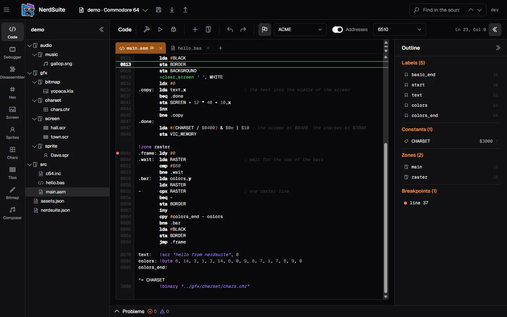
The bar above the editor holds, from left to right:
| Control | What it does |
|---|---|
| Build (hammer) | Builds the program, as Ctrl+B. Its tooltip names the file and, with a toolchain, its steps (e.g. ACME › Exomizer › VICE). |
| Run (play) | Builds and starts the program in the emulator of the machine, as F5. |
| Debug (bug) | Builds and starts it in VICE with its breakpoints, as F6. Only for the machines VICE runs. |
| Ultimate (chip) | Builds and sends it to an Ultimate 64 on the network, as Shift+F5. Only shown for C64 projects with an Ultimate set up in the settings. |
| New source file (+) | A new assembler, BASIC or C source (see below). |
| Open a source of the project | A menu of all sources of the project. |
| Undo / Redo | Ctrl+Z / Ctrl+Y. |
| Main program (flag) | Make this the main program; highlighted when the file is the main program. |
| Assembler | Assembler files: ACME or KickAssembler for this file. |
| Addresses | Assembler files: a switch - on, the gutter shows the addresses of the last build; off, line numbers. |
| CPU | ACME files: the CPU of the project (6502, 6510, 65c02, 65816, z80, 45GS02 ...). |
| Dialect | BASIC files: the BASIC dialect of the file. |
| Label mode, embedded data, rename / renumber | BASIC files, see BASIC. |
Ln, Col | The position of the caret. |
| Show the outline | Shows or hides the side panel. |
Sources, tabs, outline
Every open source has a tab: its name, a flag for the main program and a dot while it has changes that are not saved. A tab closes with its ×, or with a middle click; with unsaved changes NerdSuite asks first. A right click on a tab offers Rename…, Make it the main program, Close and Delete the file. The open tabs are remembered for the session of the browser tab.

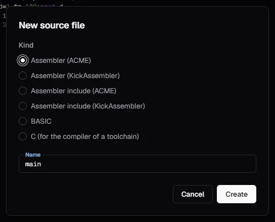
New source file (the + of the bar or after the tabs) makes a source in src/ from a template: Assembler (ACME) (.asm), Assembler (KickAssembler), the includes of both (.inc for ACME), BASIC (.bas) or C (for the compiler of a toolchain). A project without a main program takes the new file as its main program.
Ctrl+S (Save every editor into its file in the app bar) saves all editors. A build does not wait for it: it builds the text the editors show, saved or not.
The outline
For an assembler source the side panel lists Labels, Macros and functions, Constants (with their values), Zones (ACME !zone, KickAssembler .namespace) and the Breakpoints of the file. Local labels (.name, @name) are not listed. A click goes to the line. For BASIC the outline lists the labels of the label mode; a double click or a right click renames a label with every jump to it.
Editing
Completion

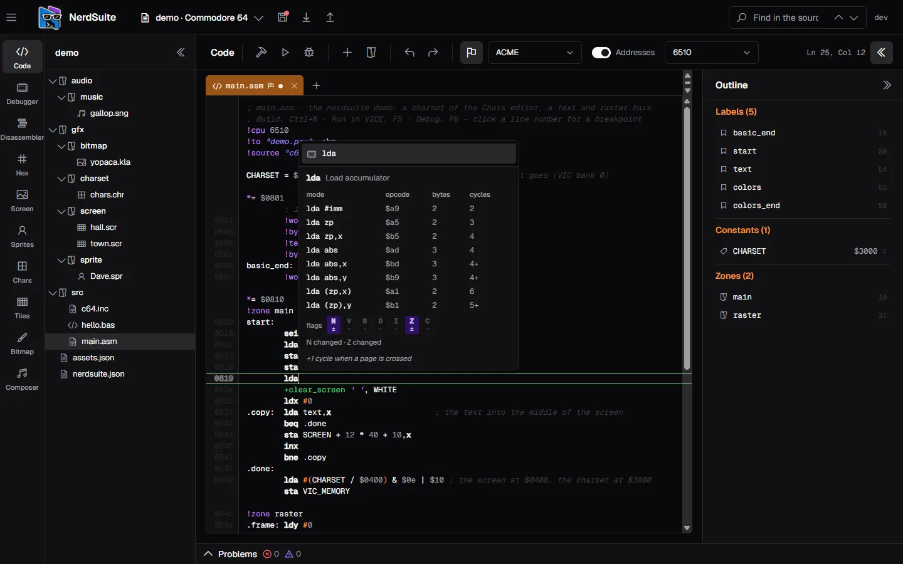
While you type, NerdSuite offers what may follow: instructions of the CPU, pseudo ops, macros, labels and constants of the project, symbols of the last build, the registers of the machine (type $d0 on a C64), BASIC keywords, PETSCII codes in strings. Ctrl+Space opens the list anywhere. Some characters open it at once: ! and + in ACME, . and # in KickAssembler, { in a BASIC string.
In the list: ↑ ↓ move, PgUp PgDn move by ten, Enter or Tab insert, Esc closes. Inside an operand NerdSuite may show only the help of the instruction, without a list, so that Enter still ends the line. Nothing is offered in comments, in strings (but BASIC's {codes}) and after REM.
Documentation with Shift

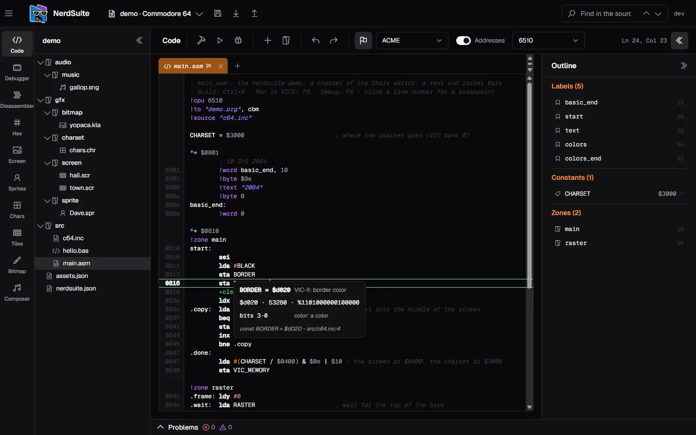
BORDER: the register of the VIC-II, its address in three notations, its bits and where the constant is defined.Hold Shift with the mouse over a word: after a moment its documentation appears. For an instruction its modes, opcodes and flags; for a pseudo op its syntax; for a number or symbol its value and the register of the machine at that address, with its bits; for a BASIC keyword its syntax, parameters and token. The documentation depends on the CPU and the machine of the project.
Go to the definition, rename

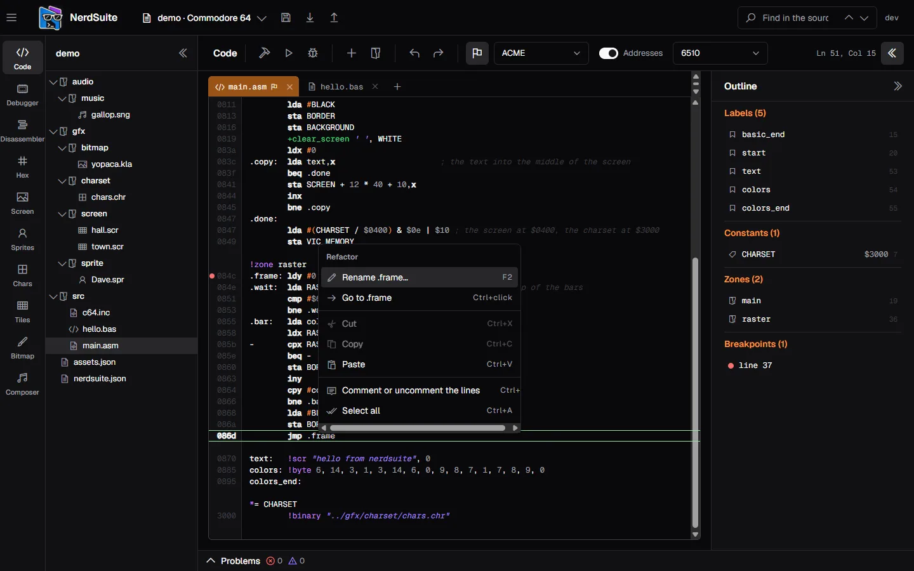
- Ctrl+click on a label or a
+macrogoes to its definition, in any source of the project (assembler). - F2 renames the label at the caret with every use of it. A global label is renamed in all sources of the same assembler; an ACME local label (
.name) within its!zone; an@namebetween the global labels around it. Comments and strings stay as they are. The files changed open as tabs with unsaved changes; the message offers Undo. In BASIC, F2 works in the label mode. - The right click opens a menu: Rename…, Go to …, Cut, Copy, Paste, Comment or uncomment the lines, Select all. In a string of a Commodore BASIC it opens the PETSCII panel instead.
More keys
- Tab / Shift+Tab indent the selected lines by four spaces or take them back; without a selection Tab writes four spaces.
- Ctrl+/ comments the lines in or out:
;in ACME,//in KickAssembler and C,remin BASIC. - Enter keeps the indent; in BASIC it proposes the next line number.
- Ctrl + mouse wheel zooms the code (0.6× to 3×), Ctrl+0 resets it. The zoom applies to every code editor.
Search

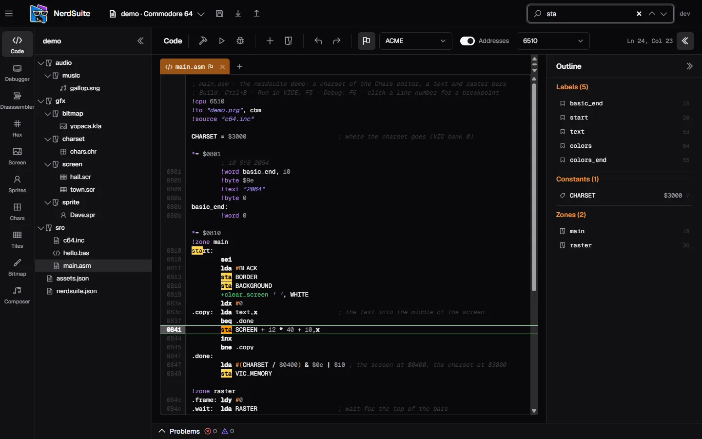
Ctrl+F goes to the search field of the header (Find in the source). While you type, every match in the editor is marked yellow. Enter goes to the next match, Shift+Enter to the previous one (or the arrows next to the field); the current match is orange. The search ignores case and wraps around. Esc clears it and returns to the editor.
The gutter

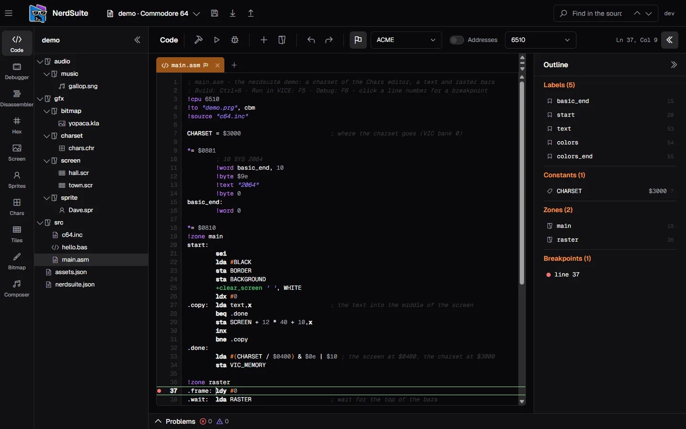
- Line numbers or addresses: after a successful build of an assembler source the gutter shows the address of every line that makes bytes (instructions, data) and of every label; the other lines stay empty. The Addresses switch of the bar turns back to line numbers. When the file changed since the build, the addresses are dimmed until the next build.
- Caret and selection: the line of the caret is framed across the gutter and the code; its number or address is bold. Selected lines get the colour of the selection in the gutter too.
- Breakpoints: a click on a line number of an assembler source sets or removes a breakpoint (a red dot). See Breakpoints in the code.
- Errors: the number of a line with an error is red; its tooltip is the message.
Build, run, debug
| Key | Action |
|---|---|
| Ctrl+B | Build. |
| F5 | Build and run in the emulator of the machine. While the debugger is stopped, F5 continues instead. |
| F6 | Build and debug in VICE (see The Debugger). |
| Shift+F5 | Build and run on the Ultimate 64 (C64 projects). |
.inc, .h, .txt); then they build the main program. In the other views they always build the main program. The main program is set with the flag of the bar, the menu of a tab or File › Project settings….ACME and the BASIC tokenizer run in the browser, KickAssembler on the server. After a successful build a message names the file, its size and its start address, with the action Download. An assembler build also writes a label file for VICE (.lbl) and a listing (.lst).

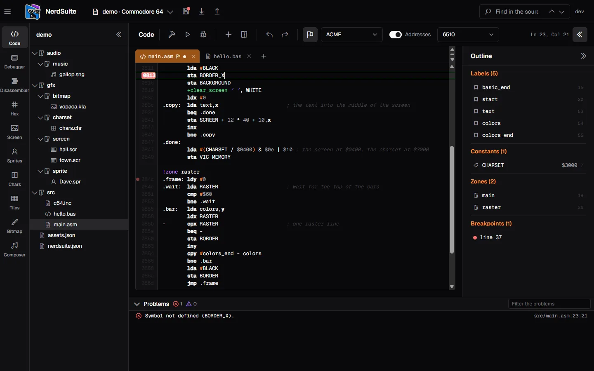
The Problems console below the view lists the errors and warnings; it opens by itself when a build fails. A click on a row opens the file at its line. The field Filter the problems narrows the list; the edge at its top can be dragged.
Where a program runs
| Machine | Emulator |
|---|---|
| C64, C128, VIC-20, Plus/4, C16, PET | VICE (run and debug) |
| MEGA65 | Xemu |
| Atari 800 XL / 130 XE | Altirra, Atari800 |
| Atari 2600 (VCS) | Stella, MAME |
| Amstrad / Schneider CPC | WinAPE, Caprice, MAME |
| NES | Mesen, FCEUX, Nestopia, MAME |
| SNES | Mesen, bsnes, Snes9x, MAME |
| ZX81 | EightyOne, ZEsarUX |
| TRS-80 | trs80gp, MAME |
| BBC Micro | BeebEm, b2, MAME |
Without a choice NerdSuite takes the first emulator it finds; Settings › Assemblers and emulators › Emulator per platform chooses one. A toolchain can replace the compiler, add a packer (Exomizer, pucrunch, Dali) and start another emulator.
Assembler
ACME and KickAssembler
Each assembler file is assembled with ACME or KickAssembler, chosen in the bar. ACME is built in and knows the CPUs 6502, nmos6502 (with the illegal opcodes), 6510, 65c02, r65c02, w65c02, 65816, 65ce02, 4502, m65 (45GS02 of the MEGA65) and z80. The CPU select of the bar sets the CPU of the project; !cpu in a source changes it for that source.
KickAssembler runs on the server and needs Java: KickAss.jar (setting or environment variable KICKASS) and java (JAVA, else JAVA_HOME or the PATH) - see Assemblers and emulators. KickAssembler makes 6502 code and .prg files, so it is for the Commodore machines.
Output
Without !to ACME writes the format of the platform: .prg (Commodore), .xex (Atari), .a26 (VCS), .bin with an AMSDOS header (CPC), .nes, .sfc, .p (ZX81), .cmd (TRS-80). With !to "name", cbm|plain|… the source decides.
hardware.inc
A new ACME project gets src/hardware.inc when its machine has a memory map: the chips, ROM routines, vectors and RAM areas as constants, to include with !source "hardware.inc".
BASIC

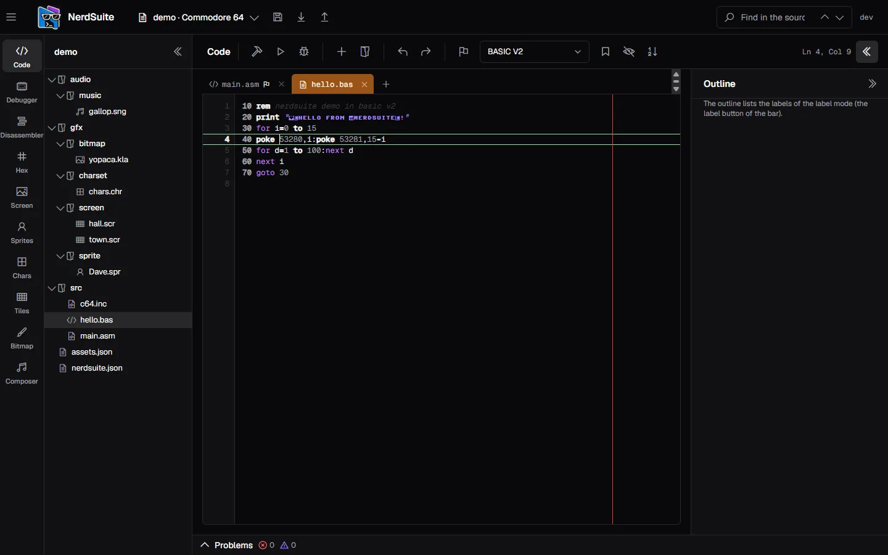
Dialects
BASIC V2, BASIC 4.0, BASIC 3.5, BASIC 7.0, BASIC 65, Simons' BASIC, Atari BASIC, Turbo-Basic XL, Locomotive BASIC 1.1, ZX81 BASIC, TRS-80 Level II BASIC and BBC BASIC II. The dialect of a file is chosen in the bar. A Commodore BASIC is built into a tokenized .prg, ZX81 BASIC into a .p file; the others into a listing to type in or to load (.lst, .bas).
Line numbers and the label mode
A program may be written with line numbers, or in the label mode (the label button of the bar): no line numbers, a line name: names the next line, and GOTO name, GOSUB, THEN, ON … GOTO, RESTORE … jump to labels. The build numbers the lines 10, 20, 30 …. Switching converts the program in both directions. In the label mode F2 or the bar renames a label with every jump to it; without it the bar has Renumber the lines (10, 20, 30 …) with GOTO, GOSUB and THEN.
PETSCII and control codes

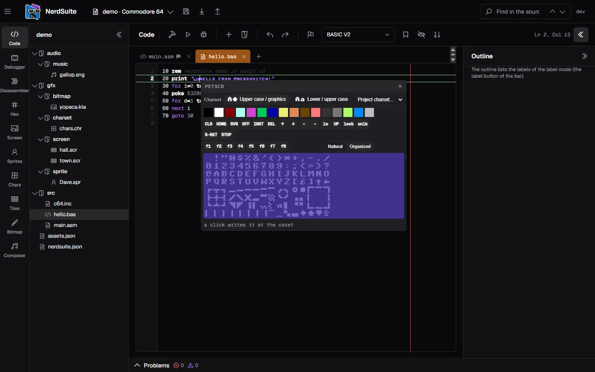
In a string of a Commodore BASIC, { offers the control codes ({clr}, {red}, {rvs on} …); a code that is complete becomes one PETSCII character, as the machine shows it. A right click in a string opens the PETSCII panel: the colours, the keys (CLR, HOME, RVS …), f1-f8 and every character; a click writes it at the caret. The panel's Charset switches between upper case / graphics, lower / upper case and a charset of the project. The files keep the readable {codes} of petcat.
DATA @embed
A line DATA @embed kind "file"[, per row[, …]] becomes DATA lines with the bytes of a file of the project when the program is built. per row is the number of values in a DATA line (1-255, empty: 16).
| Kind | Arguments after the file | Bytes |
|---|---|---|
sprite | per row, frame (index or name) | a sprite frame of the sprite editor, 64 bytes a sprite |
charset | per row, first, count | characters, 8 bytes each (without first: all) |
screen | per row, colors | the characters of a screen, or its colours |
bitmap | per row, all|bitmap|screen|colors|background | a Koala picture or a part of it |
sound | per row | the music of a .sid file |
binary | per row, from, count | any file |
10 data @embed charset "gfx/charset/chars.chr", 8, 1, 26The eye button of the bar shows after every @embed line what it embeds: a picture of the sprite, the characters or the screen and the number of bytes and DATA lines.
#define and @if
#define name [value], #undef, @if name, @if !name, @if name = value, @elif, @else and @end take lines in or out of the program before it is built. Lines that are out are dimmed. Names for the whole project are set in File › Project settings… › Defines for @if in BASIC.
The longest line
The screen editor of a machine takes lines of a certain length only (C64: 80, VIC-20: 88, C128: 160 …; Settings › Editor). The editor shows this length as a red vertical line; the part of a line past it is red, and a key that would make a line longer is refused (Enter, deleting and pasting are not). How a line is counted depends on the BASIC:
- A BASIC of tokens (the Commodores, the ZX81) is counted as it is typed: a keyword as its shortest form (
?for PRINT,pOfor POKE,goSfor GOSUB; on the ZX81 one key). Such a line may go past the red line - but afterLISTit is longer than the screen editor takes. - A BASIC of text (Atari, CPC, TRS-80, BBC) is counted as written.
The build warns of lines that are too long, also in the label mode.
Export and import
Export… (the download icon of the app bar) offers in the Code view the project as a package, the source of the tab (for BASIC with @embed also with the DATA lines resolved), and the files of the last build. Import… brings a source file (.asm .a .s .inc .bas .txt) into src/.
The Debugger

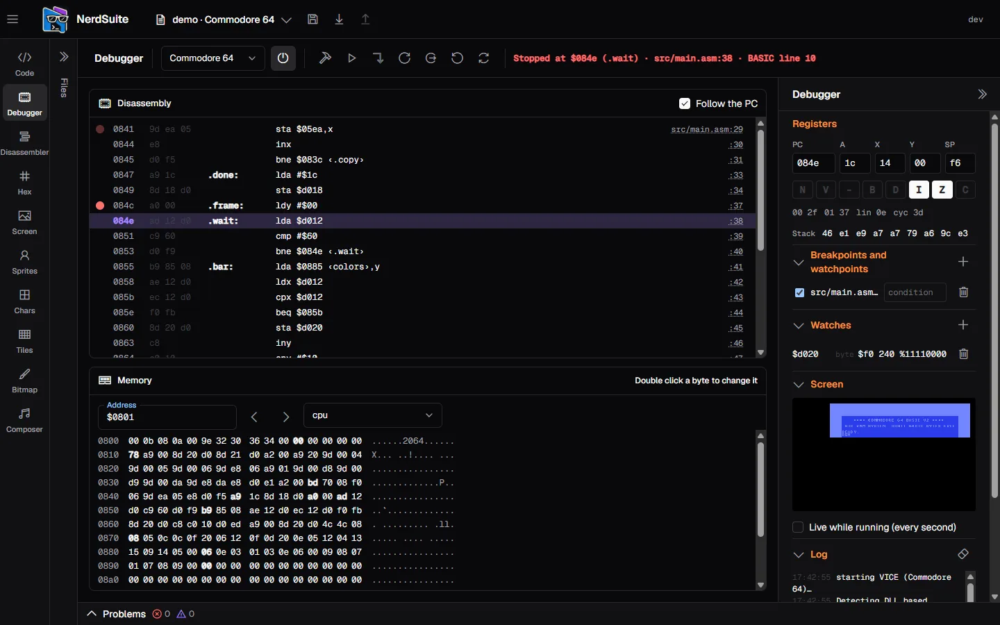
.wait: the disassembly around the PC with the labels and source lines of the build, the memory, the registers, a breakpoint, a watch and the screen of the emulator.Starting a session
The debugger works with VICE (version 3.5 or newer), so with the C64, C128, VIC-20, Plus/4, C16 and PET. NerdSuite starts VICE itself with its binary monitor; VICE needs no setup of its own. The server looks for VICE in the path of the settings (VICE in Assemblers and emulators), then in the environment variable VICE, then in the PATH.
F6 (or the bug of the Code bar, or the hammer of the Debugger bar) builds the program, starts VICE for the machine of the project (or uses the VICE that runs), places the breakpoints, loads the program, starts it and shows the Debugger. F5 runs a program in VICE too, but without its breakpoints. On other machines the program only runs.

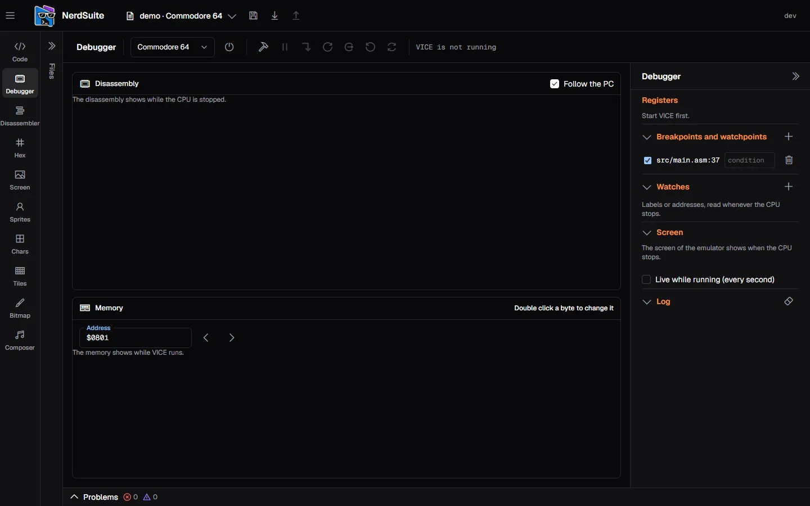
The bar
| Control | What it does |
|---|---|
| Machine | The machine VICE emulates (the machine of the project). |
| Start VICE / Stop VICE | Starts the emulator (without a program) or closes it. |
| Hammer | Build, load and run the main program with its breakpoints, as F6. |
| Continue / Pause | F8; while stopped also F5. |
| Step into | F11: one instruction. |
| Step over | F10: one instruction, a jsr as a whole. |
| Step out | Shift+F11: runs until the rts of the routine. |
| Reset the machine | A soft reset. |
| Read the state again | Reads registers, memory and the rest again. |
| Status | Running, or Stopped at $084e (.wait) · src/main.asm:38 · BASIC line 10: the PC, its label, its source line and - on the C64, VIC-20 and C128 - the BASIC line being run. |
The step keys work while the CPU is stopped, wherever the focus is. There is no "run to cursor": a breakpoint once (below) does the same.
Disassembly and memory
Disassembly shows 28 instructions around the PC while the CPU is stopped: address, bytes, label, instruction (addresses with a label get the label, ‹.copy›) and the source line, which opens the Code view at that line. The line of the PC is highlighted. The dot at the left of a line sets a breakpoint at its address. With Follow the PC the listing follows every stop.
Memory shows 256 bytes from an address - $0801, 0x…, a decimal number, %binary, a label of the build or label+offset - with the arrows a page back or on, and a bank of VICE (cpu, ram, rom, io …). It is read while VICE runs too. A double click on a byte writes new bytes: a9 01 or "text".
Registers, breakpoints, watches
The side panel Debugger has these sections:
- Registers: PC, A, X, Y and SP, editable (hex, or a label); the flags N V B D I Z C - a click toggles one; further values of VICE (the 6510 port, the raster line, cycles); and the 16 bytes of the stack above SP.
- Breakpoints and watchpoints: the breakpoints of the sources (on/off, their line, a condition) and the ones made here, with their hits. The + opens:

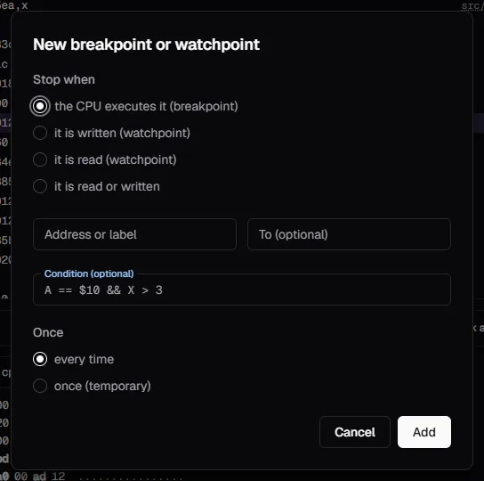
- Stop when: the CPU executes it (breakpoint), it is written (watchpoint), it is read (watchpoint) or it is read or written.
- Address or label and To (optional) for a range.
- Condition (optional) in the syntax of the VICE monitor, e.g.
A == $10 && X > 3. - every time or once (temporary).

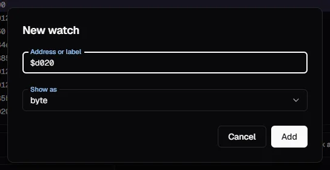
- Watches: values read whenever the CPU stops - as byte (hex, decimal, bits), word (little endian), 8 bytes or text (16 chars). A watch takes an address or a label of the build; a constant (
BORDER = $d020) is no label: give its address. - Screen: the screen of the emulator when the CPU stops, with Live while running (every second).
- Log: what VICE and the debugger said, with Clear the log.
Breakpoints in the code

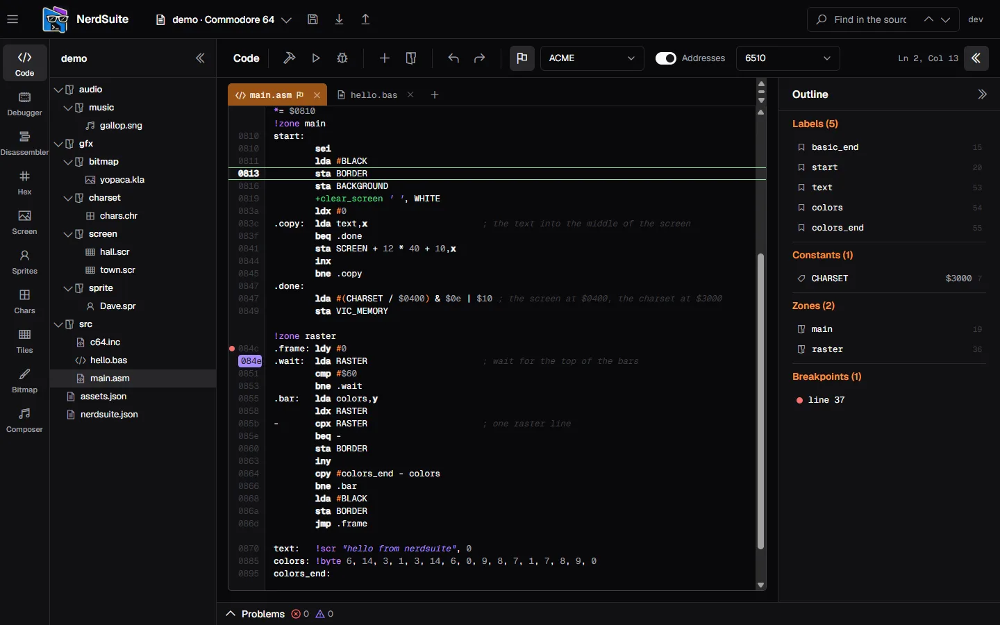
084e) - here one step after the breakpoint at .frame.A click on a line number of an assembler source sets a breakpoint at the first address the line makes (BASIC runs in the interpreter of the machine: no breakpoints). After every build the breakpoints move to the new addresses; a line that makes no code gets no breakpoint. The breakpoints of a project are kept for the session of the browser tab. When the CPU stops, the Code view opens the file of the PC and marks its line, and the Debugger reads the registers, the memory, the watches and the screen again.
The Disassembler

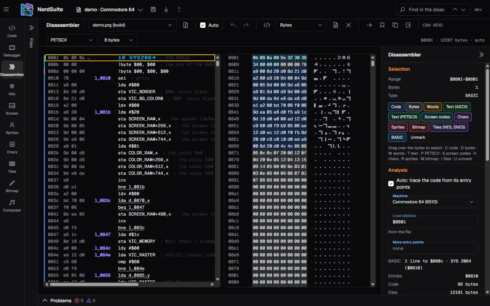
demo.prg: the BASIC line with its SYS, the code traced from it with the names of the C64 registers, the bytes at the right (8 a row), the analysis in the side panel.Files and formats
The file select of the bar lists the programs of the project (.prg .bin .raw .dat .a26 .xex .nes .sfc .smc .rom), the files of the last build (name (build)) and files from outside: dropped on the view or opened with Open a file from the disk (up to 16 MB; kept while the tab is open, Add the file to the project keeps them for good). The Hex view opens its file here with Disassemble the file.
.prg: the first two bytes are the load address; the machine follows from it ($0801 C64, $1c01 C128, $1001/$1201 VIC-20, $0401 PET) or from the project..nes: the iNES header is skipped, the PRG ROM ends at $FFFF, the vectors NMI, RESET and IRQ are entry points..sfc/.smc: LoROM, the first bank at $8000 (a copier header is skipped), 65816..a26: at the end of $10000, the reset vector is the entry point.- Everything else: from address $0000, until you set a Load address.
After every build an open build file is read again.
Layout and bar
At the left the disassembly, a line per instruction or piece of data: address, bytes, label, instruction or directive, comment. At the right the same bytes as hex and characters, coloured by their type. A selection is made by dragging over the bytes or with Shift and the arrows.
| Control | What it does |
|---|---|
| Auto | Traces the code from its entry points; the rest is data (see below). |
| Undo / Redo | Marks and names, Ctrl+Z / Ctrl+Y. |
| Mark the selection as code (C) | The selection is code. |
| Type + Mark the selection as data of this type | Bytes, Words, Text (ASCII), Text (PETSCII), Screen codes, Chars, Sprites, Bitmap, Tiles (NES, SNES), BASIC. |
| Unmark the selection (U) | Auto mode decides again. |
| Go to an address or label (Ctrl+G) | $c000, l_c000, a name. |
| Rename the label of the line (F2) | Also a double click on the label. |
| Copy as ACME source (Ctrl+Shift+C) | The whole disassembly to the clipboard. |
| Save as ACME source in the project | See Saving as source. |
| Machine · CPU | What the file is disassembled for. |
| Text, row | The characters of the byte column (ASCII, PETSCII, screen codes, ATASCII) and 8 bytes or 16 bytes a row. With 8 bytes the disassembly has more room. |
Code and data
With Auto NerdSuite follows the code from its entry points: the SYS of a BASIC line, the load address (when there is no BASIC), the vectors of a cartridge, the More entry points of the side panel and every range marked as code. Jumps, branches and calls are followed. What is reached is code; runs of six and more printable bytes are text; the rest are bytes. Without Auto every byte that is not marked is code.
A BASIC program at the start is listed as such (on the Commodores at any address); its SYS numbers are entry points. Enter or a double click on such a line goes to the code.
Ranges are marked with the bar, the buttons of the side panel or keys: C code, D bytes, W words, T text, P PETSCII, S screen codes, H chars, R sprites, M bitmap, I tiles, U unmark. Marks, names, the load address and the entry points are stored in the project (nerdsuite.json).
Labels and names
Addresses in the file get labels l_xxxx (code) and d_xxxx (data); an address within a line is label+offset. F2 or a double click gives a label a name of its own (an empty name gives it back its address name); Ctrl+Z undoes it. Addresses of the machine get the names of its memory map - sta VIC_BORDER - for the C64, C128, VIC-20, Plus/4, C16, PET, MEGA65, Atari 8-bit and VCS, NES, SNES, CPC, ZX81, TRS-80 and BBC Micro.
The comments are made by NerdSuite: the description of a register or ROM routine, what a value written means ($1b: y scroll 3 · rows 25 · screen on), the text of a BASIC line, char n, sprite n and the like. Comments of your own are not possible.
Enter or a double click on a line follows its jump; Backspace comes back. The search of the header (Find in the disassembly) finds labels, instructions and addresses.
The side panel

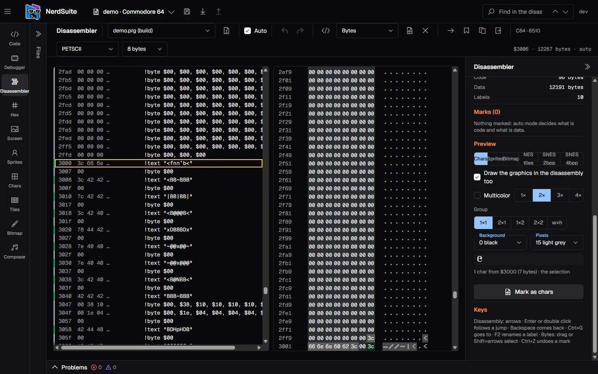
- Selection: range, size and type of the selection, and a button for every type.
- Register: when the line names a register - its description, the value written and its bits.
- Analysis: Auto, the Machine, the Load address (not for
.prgand cartridges), More entry points, and what was found: BASIC lines, entries, code, data, labels. - Marks: the marked ranges; a click selects one, × removes it.
- Preview: the selection or the bytes from the cursor as Chars, Sprites, Bitmap, NES or SNES tiles, with multicolor, zoom, groups (e.g. 2×2 characters) and the colours. Draw the graphics in the disassembly too shows the pixels in the lines. Mark as … marks the range previewed.
- Keys: the keys of the view.
Saving as source
Save as ACME source in the project writes the disassembly as src/name_dis.asm (or a path of your own) and opens it in the Code view: the names of the machine addresses it uses as constants, !cpu, !to, the start address, the code with its labels and the data as !byte, !text and so on. A file with a header (NES, SNES) is written with !pseudopc. The source assembles to the same bytes. Renaming a label later also renames it in that source while it is open.
The Hex view

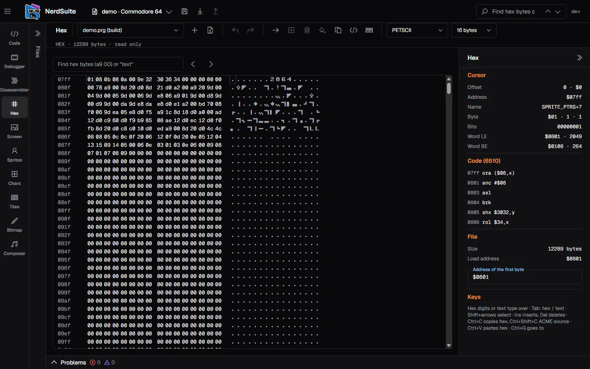
demo.prg in the Hex view: addresses from its load address, the bytes, PETSCII, and at the right the byte at the cursor, the code from there and the file.Files
The file select lists every file of the project, the files of the last build (name (build)) and files from outside (name (dropped), by dropping or with Open a file from the disk, up to 16 MB). Files without an editor of their own open here from the file list too.
Only the binary files of the project can be changed (.chr .bin .raw .kla .koa .art .sng .scr .gfx .spr .til .prg .sid .dat .map .col .nes .sfc .smc .a26 .xex .rom). Sources, build files and dropped files are read only; a dropped file can be added to the project with Add the file to the project.
Bar and layout
| Control | What it does |
|---|---|
| New binary file | A new file: path (.bin .raw .dat .prg .map .col), size (1-65536) and the byte it is filled with. |
| Open a file from the disk | A file from outside (or drop it on the view). |
| Undo / Redo | Ctrl+Z / Ctrl+Y, 200 steps. |
| Go to an offset or address (Ctrl+G) | See Find and go to. |
| Insert a byte at the cursor (Ins), Delete the selected bytes (Del) | Inserts $00, deletes. |
| Fill the selection | With bytes repeated (00 or a9 01). |
| Copy as hex (Ctrl+C) | a9 00 8d … |
| Copy as ACME source (Ctrl+Shift+C) | A label and !byte lines of 16 bytes. |
| Disassemble the file | Opens it in the Disassembler. |
| Text, row | ASCII, PETSCII (in the C64 font), screen codes or ATASCII; 8, 16 or 32 bytes a row. |
Each row has the offset (or, with a base address, the address), the bytes with a gap after eight, and the text. A .prg starts its addresses at its load address. The status shows the column of the cursor (HEX or TEXT), changes, the size and read only.
Editing
- In the hex column hex digits type over the byte, high nibble first; then the cursor moves on.
- In the text column a character is written in the encoding chosen (PETSCII: a small letter as a capital, a capital shifted).
- Tab switches between the columns. At the end of a file the empty
__takes new bytes. - Ins inserts a
$00, Del or Backspace delete the selection or the byte at the cursor. - Ctrl+V pastes hex bytes at the cursor (they replace what is there and may make the file longer).
- A click moves the cursor, Shift+click or Shift+arrows select, Home / End go to the start / end of the row, Ctrl+Home / Ctrl+End of the file, Ctrl+A selects all.
Save the file in the side panel or Ctrl+S saves; another file with unsaved changes asks first.
Find and go to
The find field above the bytes (and the search of the header) take hex bytes (a9 00 or a900) or "text" in quotes, encoded in the text chosen; other text is searched as ASCII. Enter finds the next, Shift+Enter the previous match. Ctrl+G goes to an address ($c000) or offset (+12, $10, 16).
The side panel
- Cursor: offset, address, the name of the machine at that address (e.g.
SPRITE_PTRS+7), the selection, the byte (hex, unsigned, signed), its bits and the word in both byte orders. - Code: six instructions disassembled from the cursor, for the CPU of the project.
- File: size, load address, Address of the first byte (a base address for the offsets) and Save the file.
- Keys: the keys of the view.
Menu and settings
The menu

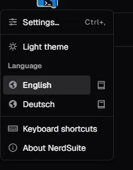
- Settings… (Ctrl+,) opens the settings.
- Dark theme / Light theme switch the theme. Without a choice NerdSuite follows the system.
- Language: English or Deutsch. The book at the right of a language opens this handbook in it.
- Keyboard shortcuts lists the main keys, About NerdSuite the version.
The settings dialog

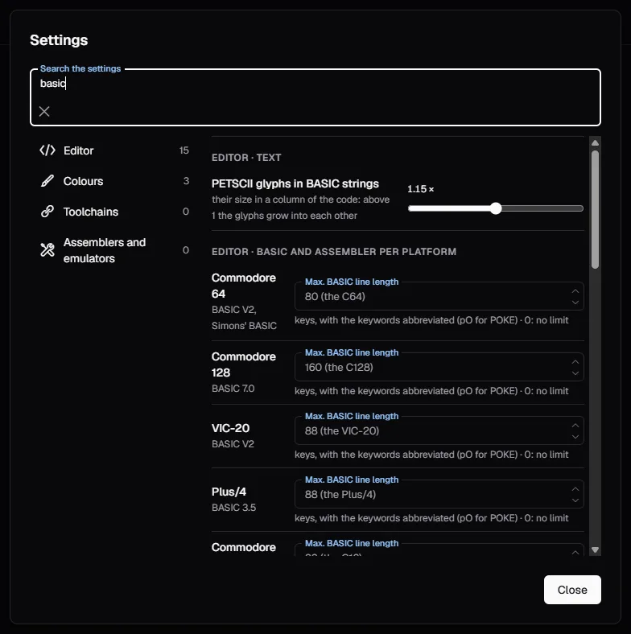
basic.The settings have four sections: Editor, Colours, Toolchains and Assemblers and emulators. Search the settings finds a setting by its name, its group or its hint in all of them. The settings of the editor and the colours are kept in this browser and work at once; toolchains, paths, emulators and the Ultimate are kept on the server (~/.nerdsuite/settings.json, or the file of NERDSUITE_SETTINGS) and are saved when a field is left.
Editor

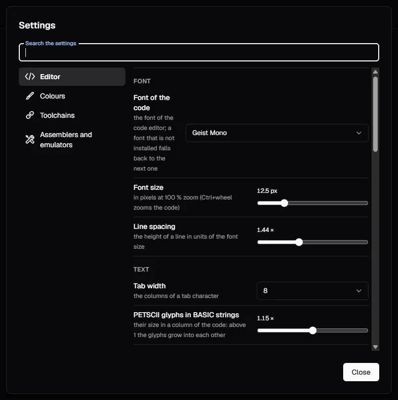
| Setting | Meaning |
|---|---|
| Font of the code | Geist Mono, C64 Pro Mono, Cascadia Mono, Consolas, JetBrains Mono, Fira Code, Source Code Pro, Courier New, the system's monospace font, or Another font … by its CSS name. |
| Font size | 8-28 pixels at 100 % zoom. |
| Line spacing | 1-2.2 times the font size. |
| Tab width | 2, 4 or 8 columns. |
| PETSCII glyphs in BASIC strings | Their size in a column, 0.8-1.5. |

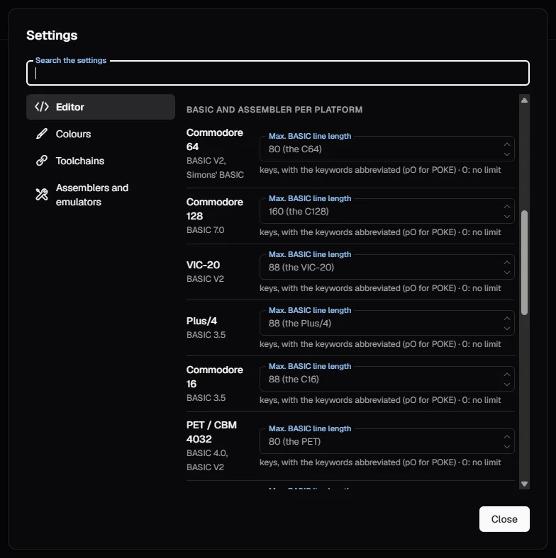
BASIC and assembler per platform has a row for every machine with a BASIC: Max. BASIC line length, empty for the machine's own (C64 80, C128 160, VIC-20 / Plus/4 / C16 88, PET 80, MEGA65 160, Atari 120, CPC 255, TRS-80 240, BBC 238, ZX81 no limit), 0 for no limit. The hint below the field says how the platform counts: keys with abbreviated keywords, or characters as written (see The longest line). The editor as it was resets the editor and these values, not the colours.
Colours

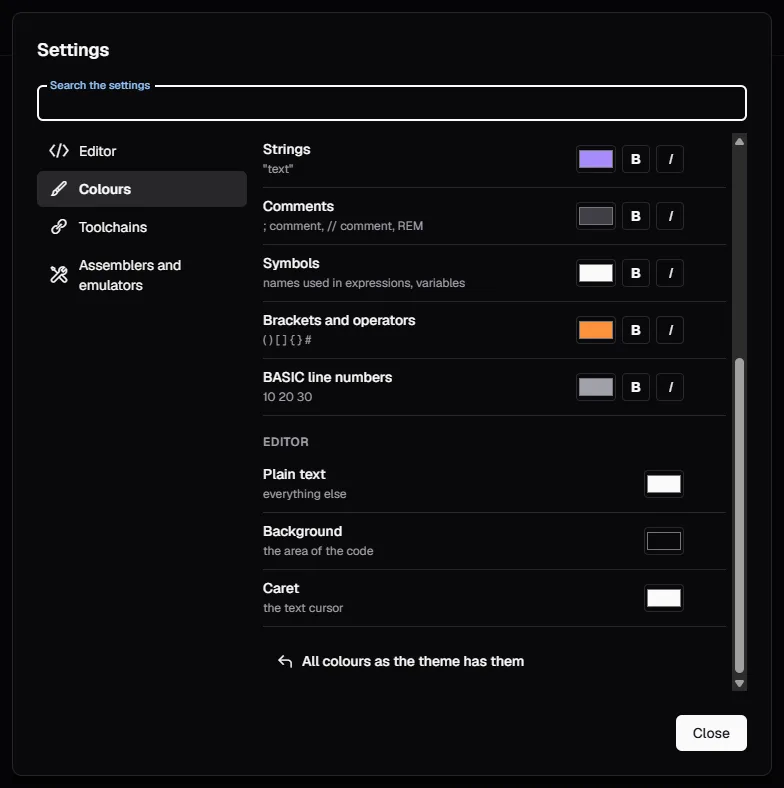
Each kind of token - directives and pseudo ops, mnemonics and keywords, labels, macro calls, numbers, strings, comments, symbols, brackets and operators, BASIC line numbers - has a colour, Bold and Italic. Plain text, background and caret have a colour. The undo button of a row gives it back the colour of the theme; All colours as the theme has them resets all.
Toolchains

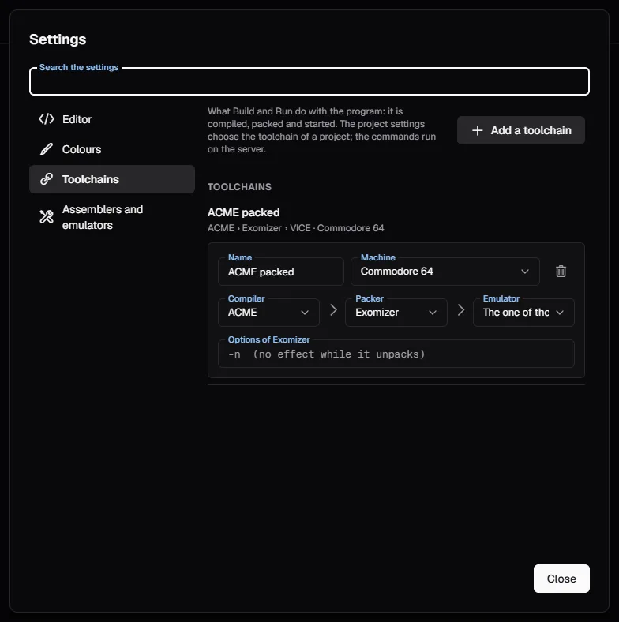
A toolchain says what Build and Run do with a program: compile, pack, start. Add a toolchain starts from a preset (ACME › Exomizer › VICE (C64), KickAssembler › Exomizer › VICE (C64), 64tass › VICE (C64), cc65 (C) › VICE (C64), oscar64 (C) › Exomizer › VICE (C64), or an empty one). Each has a name, a machine (or every machine) and three steps:
- Compiler: As the project sets it, ACME, KickAssembler or A command… - with
{main}(the source),{out}(the program),{dir},{name},{platform}. - Packer: None, Exomizer, pucrunch, Dali or a command with
{in},{out},{exec}(where it starts); options of their own. - Emulator: The one of the machine, an emulator, Ultimate 64 (a real C64) or a command with
{file}.
A project chooses its toolchain in File › Project settings… › Toolchain. The commands run on the server.
Assemblers and emulators

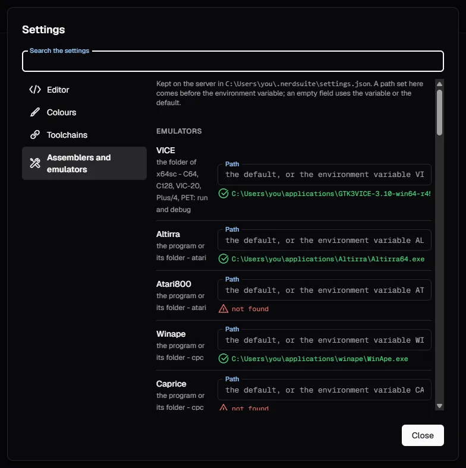
For each tool a Path - the program or its folder. A path set here comes before the environment variable of the tool; an empty field uses the variable or the default. Below the field NerdSuite shows what it found, not found, or that another path is used.
| Group | Tools (environment variable) |
|---|---|
| Emulators | VICE (VICE, the folder of x64sc), Altirra, Atari800, WinAPE, Caprice, Stella, Mesen, FCEUX, Nestopia, bsnes, Snes9x, EightyOne, ZEsarUX, trs80gp, BeebEm, b2, Xemu, MAME |
| Assemblers | KickAssembler (KICKASS, KickAss.jar or its folder), Java (JAVA) |
| Packers | Exomizer (EXOMIZER), pucrunch (PUCRUNCH), Dali (DALI) |
Ultimate 64: the Address (name or IP) of an Ultimate 64 or Ultimate-II+ on the network, for Shift+F5 (REST API, firmware 3.11 or newer), and its Password, if it has one; the status shows whether the device answers. Emulator per platform chooses the emulator Run starts for each platform; without a choice the first one found.
Keyboard shortcuts
| Key | Action | Where |
|---|---|---|
| Ctrl+S | Save every editor | everywhere |
| Ctrl+B | Build | everywhere |
| F5 | Build and run (continue while stopped) | everywhere |
| Shift+F5 | Build and run on the Ultimate 64 | everywhere |
| F6 | Build and debug in VICE | everywhere |
| F8 | Pause / continue | debugger |
| F10 / F11 / Shift+F11 | Step over / into / out | debugger |
| Ctrl+F | Search; Enter next, Shift+Enter previous, Esc clear | Code, Disassembler, Hex |
| Ctrl+Space | Suggestions at the caret | Code |
| Shift (held) | Documentation of the word under the mouse | Code |
| Ctrl+click | Go to the definition | Code (assembler) |
| F2 | Rename the label | Code, Disassembler |
| Ctrl+/ | Comment the lines in or out | Code |
| Tab / Shift+Tab | Indent the lines in or out | Code |
| Ctrl+wheel / Ctrl+0 | Zoom the code / its own size | Code |
| Ctrl+Z / Ctrl+Y | Undo / redo | Code, Disassembler, Hex |
| Ctrl+G | Go to an address | Disassembler, Hex |
| Ctrl+Shift+C | Copy as ACME source | Disassembler, Hex |
| C D W T P S H R M I U | Mark as code, bytes, words, text, PETSCII, screen codes, chars, sprites, bitmap, tiles; unmark | Disassembler |
| Enter / Backspace | Follow a jump / come back | Disassembler |
| Ins / Del | Insert / delete bytes | Hex |
| Ctrl+, | Settings | everywhere |